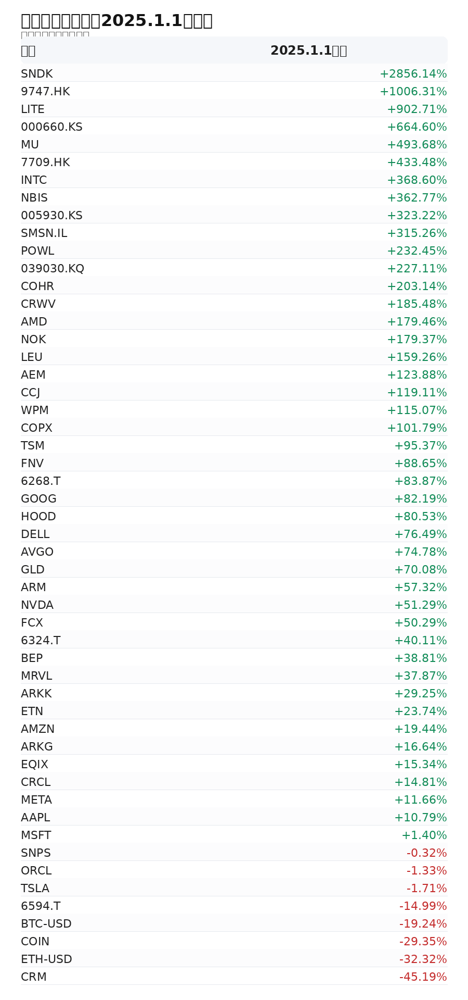

单一公司、单一叙事、单一新闻，都不是第一层变量。第一层变量是全球流动性与贴现率；第二层变量是财政、产业政策与制度激励；第三层才是技术革命如何穿透真实经济，形成订单、资本开支、供应链约束和现金流。
所以，这套框架的重点不是预测每一天的涨跌，而是判断一个资产是否处在正确的宏观约束、产业传导和现金流兑现路径上。
先判断世界的流动性约束与制度方向，再判断技术变化在哪里穿透现实经济，最后才做资产选择。
这个顺序的意义，是避免把“令人兴奋的叙事”误认为“可以长期承载资本的现金流”。技术革命可以创造巨大机会，但价值捕获通常不均匀，且会受到利率、融资成本、供应链和政策方向共同约束。
| 层级 | 关注变量 | 过滤的问题 |
|---|---|---|
| 全球流动性 | 美债收益率、真实利率、美元、信用利差、日本货币政策 | 避免在贴现率逆风中高估成长资产可承受的估值 |
| 制度方向 | 财政、税收、关税、监管、产业政策、能源政策 | 区分情绪新闻与真正改变资本流向的政策变量 |
| 技术传导 | AI CapEx、GPU、HBM、光模块、电力、铜、数据中心 | 避免只看技术兴奋度，而忽略订单、供给和资本开支 |
| 公司质量 | 收入、毛利、经营杠杆、现金流、客户集中度、估值 | 避免把正确行业里的弱公司当成高质量资产 |
| 跨资产确认 | 美股、黄金、白银、铜、Bitcoin、Ethereum、现金、短债 | 避免让单一资产的价格走势绑架整体判断 |

Kerwin 的组合视角不是简单追求标的数量分散，而是让每一类资产承担明确角色。增长资产负责进攻，硬资产负责通胀与制度风险，数字金融负责金融基础设施可选性，现金与短债负责生存和再部署能力。
| 角色 | 典型资产 | 组合功能 |
|---|---|---|
| 增长核心 | AI 核心股票、半导体、存储、数据中心链 | 表达技术革命与资本开支周期 |
| 产业外溢 | 电力、铜、光模块、服务器、封装与设备 | 捕捉 AI 从模型扩散到基础设施的二阶机会 |
| 制度对冲 | 黄金、白银、短债、现金、部分能源资产 | 对冲贴现率、货币贬值和制度风险 |
| 数字金融 | Bitcoin、Ethereum、稳定币与 RWA 基础设施 | 表达金融基础设施迁移的长期可选性 |
| 流动性储备 | 现金、短久期工具、低波动仓位 | 在主线回撤时保留再部署能力 |
长期判断可以有信念，但不能把信念变成防守性叙事。真正重要的是：当现实数据变化时，能否及时识别 thesis 是短期波动，还是已经被破坏。
如果真实利率和美元同时上行、AI CapEx 放缓、供应链订单弱化、公司现金流无法兑现，或者跨资产信号出现明显背离，原有组合假设需要重新审判。
第一，流动性是否支持估值？第二，技术传导是否继续扩散？第三，公司收入和自由现金流是否跟上叙事？
Kerwin 的投资框架可以压缩成一句话：先判断结构，再决定资本。市场每天都会给出价格，但不是每个价格都代表价值；技术每天都有叙事，但不是每个叙事都能变成现金流。